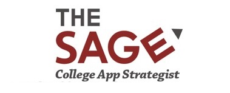

IJSCAR Fall Research Symposium 2026
The IJSCAR Fall Research Symposium 2026 will be held on Saturday, October 17, 2026 from 10:00 AM to 12:30 PM (EST).
The symposium will be held online via Zoom. Through the symposium, we will be discussing the latest research in the field of secondary computing and applications.
The judges will evaluate the submissions and select the top 3 papers for a certificate of excellence.
Submission Guidelines
Authors should submit an abstract of 500 words or less. The abstract should introduce the problem at a high level, and make explicit the contribution of the paper. Work in progress abstracts are welcome. There are no proceedings for this event, so submissions can be work that has already been published.
Submissions will be accepted on a rolling basis, starting in September 2026. Authors will be notified of acceptance by October 14, 2026.
To submit, please email your abstract to submissions@ijscar.org.
If your abstract is accepted, you will be asked to prepare a poster to present in a breakout room at the symposium. Additionally, the top 3 papers will be invited to present their work in a 5-minute presentation at the end of the symposium for the full audience. All participants should prepare slides for a 5-minute presentation in the event that they are selected to present.
How to Prepare
To Write an Abstract
See our guide: How to Write an Abstract.
To Make a Poster
See our guide: How to Prepare a Poster (and Pitch!) for a Research Symposium.
Schedule Overview
| Time (EST) | Event |
|---|---|
| 10:00 AM - 10:10 AM | Welcome and Opening Remarks |
| 10:10 AM - 12:00 PM | Poster Sessions in breakout rooms. Judges will rotate between rooms. |
| 12:00 PM - 12:10 PM | Tips on publishing |
| 12:10 PM - 12:30 PM | Awards Announcement, Closing Remarks, and Research Presentations (top 3 presentations) |
Schedule block lengths above are a placeholder split of the 2.5-hour window, scaled from the Fall 2025 agenda — adjust as needed.


To submit, please email your abstract to submissions@ijscar.org. There is no fee to submit or participate.
 |
Lumiere Education Gold Sponsor |
| Bricks Consulting Gold Sponsor |
|
 |
The Sage Gold Sponsor |
 |
Become a Sponsor |